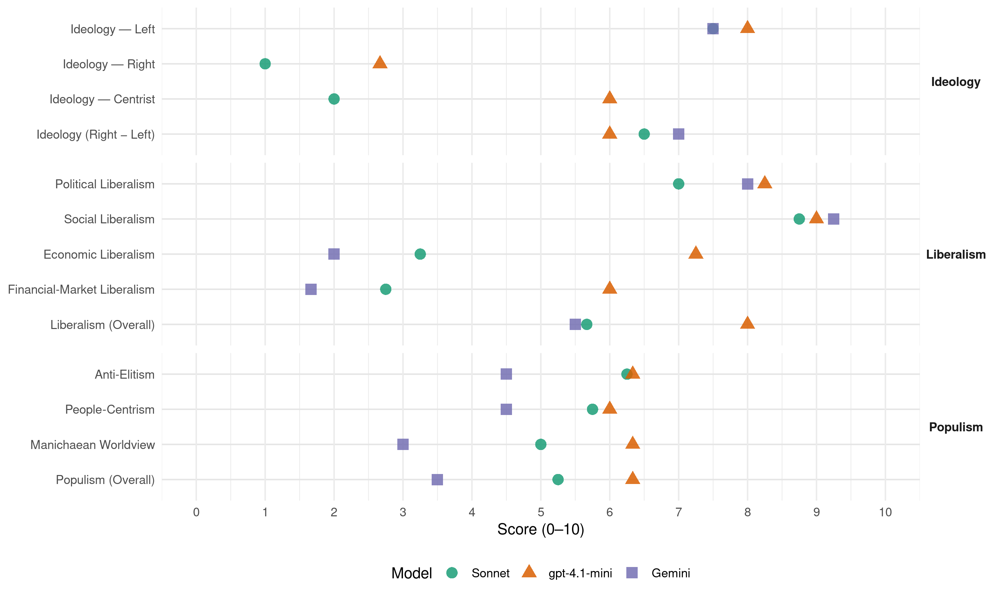

IU (Spain, 2004)
manifesto_id 33220_200403
Get full text: This site shows derived annotations and short verbatim quotes only. The full manifesto text is © Manifesto Project / WZB — obtain it via manifesto-project.wzb.eu using the manifesto_id above.
Headline scores
| Dimension | Sonnet | gpt-4.1-mini | Gemini |
|---|---|---|---|
| Populism (Overall) | 5.2 | 6.3 | 3.5 |
| Anti-Elitism | 6.2 | 6.3 | 4.5 |
| People-Centrism | 5.8 | 6.0 | 4.5 |
| Manichaean Worldview | 5.0 | 6.3 | 3.0 |
| Ideology (Right − Left) | 6.5 | 6.0 | 7.0 |
| Liberalism (Overall) | 5.7 | 8.0 | 5.5 |
| Political Liberalism | 7.0 | 8.2 | 8.0 |
| Social Liberalism | 8.8 | 9.0 | 9.2 |
| Economic Liberalism | 3.2 | 7.2 | 2.0 |
| Financial-Market Liberalism | 2.8 | 6.0 | 1.7 |
Evidence per dimension
Economic Liberalism
Gemini · score 2.0 · verified · chunk 1
“poder regulador y corrector del mercado”
IU defenderá la capacidad del Estado como poder regulador y corrector del mercado, defensor del interés general
Gemini · score 1.0 · verified · chunk 2
“defensa de los servicios públicos y de su gestión pública”
En este marco IU propone: La defensa de los servicios públicos y de su gestión pública, así como la mejora de la calidad
Gemini · score 3.0 · verified · chunk 3
“evitar las prácticas monopolísticas”
La Administración debe VIGILAR Y EVITAR LAS PRÁCTICAS MONOPOLÍSTICAS de las poderosas productoras estadounidenses (majors) frente a operadores
Gemini · score 2.0 · verified · chunk 4
“Rechazo frontal a la privatización de”
Desarrollo de programas culturales, educativos y de inserción laboral para todos los presos y presas. Rechazo frontal a la privatización de los servicios de las cárceles.
gpt-4.1-mini · score 7.0 · verified · chunk 1
“política fiscal redistributiva”
Un nuevo contrato ecológico y social con la ciudadanía, para mejorar sustancialmente las condiciones laborales, los derechos sociales y la calidad de vida; para ampliar el Estado del Bienestar con el reconocimiento de una renta básica para todas las personas y la expansión de los servicios públicos sociales. Todo ello por medio de una política de pleno empleo estable y de calidad; de una política fiscal redistributiva y de un desarrollo económico sostenible, que preserve y mejore nuestro patrimonio natural y el medio ambiente.
gpt-4.1-mini · score 8.0 · verified · chunk 2
“promover la competencia, a los catalogados como de carácter económico”
Es importante recalcar el papel esencial de los servicios públicos, como factor de corrección de desigualdades y garantía de los derechos sociales, económicos y culturales de los ciudadanos. Sin embargo en el momento actual se ha generado una grave crisis en el propio concepto de Servicio Público, al plantear la Unión Europea la plena aplicación de la competencia, a los catalogados como de carácter económico (transportes, energía, telecomunicaciones, agua, etc) prácticamente sin restricción alguna.
gpt-4.1-mini · score 7.0 · verified · chunk 3
“Favorecer una auténtica competencia en los servicios de interés general liberalizados”
Favorecer una AUTÉNTICA COMPETENCIA en los servicios de interés general liberalizados (luz, agua, teléfono, carburantes…) con el fin de abaratar los precios y mejorar el servicio.
gpt-4.1-mini · score 7.0 · verified · chunk 4
“defensa del Servicio Público, en el pluralismo cooperativo, en la descentralización”
…Izquierda Unida defiende unas Administraciones Públicas basadas en la defensa del Servicio Público, en el pluralismo cooperativo, en la descentralización y desconcentración de funciones…
Sonnet · score 3.0 · verified · chunk 1
“modelo económico antisocial y fundado en unos presupuestos frágiles”
del desarrollo de un modelo económico antisocial y fundado en unos presupuestos frágiles y poco consistentes — IU opposes neoliberal market model
Sonnet · score 3.0 · verified · chunk 2
“Revisión de los procesos privatizadores defendiendo un Sector Público democrático”
Revisión de los procesos privatizadores defendiendo un Sector Público democrático que promueva un desarrollo sostenible, económico, social y ambiental.
Sonnet · score 4.0 · verified · chunk 3
“Favorecer una AUTÉNTICA COMPETENCIA en los servicios”
Favorecer una AUTÉNTICA COMPETENCIA en los servicios de interés general liberalizados (luz, agua, teléfono, carburantes…) con el fin de abaratar los precios y mejorar el servicio.
Sonnet · score 3.0 · verified · chunk 4
“rectificación del actual proceso de privatización”
PREFERENCIA DE LA TITULARIDAD PÚBLICA DE LA GESTIÓN, mediante la rectificación del actual proceso de privatización
Financial-Market Liberalism
Gemini · score 1.0 · verified · chunk 2
“control y fiscalización de los movimientos de capital”
Establecer el control y fiscalización de los movimientos de capital a corto plazo para limitar la pura especulación financiera
Gemini · score 3.0 · verified · chunk 3
“financiación preferente con las cajas de ahorro”
potenciar las iniciativas empresariales de las mujeres así como impulsar programas de financiación preferente con las cajas de ahorro.
Gemini · score 1.0 · verified · chunk 4
“impuesto sobre los movimientos especulativos de capital”
Promover a escala internacional un impuesto sobre los movimientos especulativos de capital a corto plazo (Tasa Tobin o similar)
gpt-4.1-mini · score 6.0 · verified · chunk 4
“control del comercio de armas se hará con transparencia bajo control parlamentario”
…IU propondrá desde el gobierno el control de todas las transferencias militares, de seguridad y policiales desde España, incluidos los bienes y tecnologías de doble o múltiple uso; este control del comercio de armas se hará con transparencia bajo control parlamentario…
Sonnet · score 3.0 · verified · chunk 1
“planes privados de pensiones”
Revisar el gasto fiscal por aportaciones a planes privados de pensiones de tal forma que el límite máximo de la deducción en el IRPF se reduzca
Sonnet · score 2.0 · verified · chunk 2
“control y fiscalización de los movimientos de capital a corto plazo”
Establecer el control y fiscalización de los movimientos de capital a corto plazo para limitar la pura especulación financiera y relanzar la inversión productiva y el empleo.
Sonnet · score 4.0 · verified · chunk 3
“derogación del secreto bancario y la lucha contra el blanqueo”
Se intensificará la lucha contra el narcotráfico con medidas como la derogación del secreto bancario y la lucha contra el blanqueo de dinero.
Sonnet · score 2.0 · verified · chunk 4
“impuesto sobre los movimientos especulativos de capital”
Promover a escala internacional un impuesto sobre los movimientos especulativos de capital a corto plazo (Tasa Tobin o similar)
Political Liberalism
Gemini · score 8.0 · verified · chunk 1
“respeto de los principios democráticos del Estado de Derecho”
mediante su apertura a la sociedad, el respeto de los principios democráticos del Estado de Derecho y la transparencia en las decisiones
Gemini · score 8.0 · verified · chunk 2
“un Parlamento ninguneado, un Poder Judicial mediatizado”
Tenemos un Parlamento ninguneado, un Poder Judicial mediatizado y una fiscalía a las órdenes del gobierno
Gemini · score 8.0 · verified · chunk 3
“regeneración de la vida democrática”
IU se compromete a realizar cuantos esfuerzos sean necesarios para avanzar en la regeneración de la vida democrática en nuestro país
Gemini · score 8.0 · verified · chunk 4
“garantizar la independencia del poder judicial”
Elección parlamentaria pura de los miembros del Consejo General del Poder Judicial, para garantizar la independencia del poder judicial.
gpt-4.1-mini · score 8.0 · verified · chunk 1
“democracia participativa y paritaria”
Nuevos derechos y libertades para las personas, en una democracia inclusiva, participativa y paritaria, que garantice la igualdad entre la mujer y el hombre, con el feminismo como proyecto de transformación de la sociedad, a partir de un nuevo pacto político que, partiendo de la asunción de que vivimos en una sociedad donde hombres y mujeres no tienen las mismas oportunidades y que las estructuras patriarcales siguen ancladas en la sociedad, trace alternativas eficaces para eliminarlas;
gpt-4.1-mini · score 8.0 · verified · chunk 2
“MEJORA DE LA CONVIVENCIA DEMOCRÁTICA mediante planes específicos”
SO A LA PARTICIPACIÓN de la comunidad educativa y de la ciudadanía en general en la planificación educativa, potenciando el asociacionismo y los Consejos escolares de centro, municipales, de distrito, de la Comunidad y del Estado. – MEJORA DE LA CONVIVENCIA DEMOCRÁTICA mediante planes específicos que impliquen al conjunto de la sociedad, y especialmente a los medios de comunicación, en el fomento de valores de respeto mutuo, tolerancia y solidaridad. 5. POR UNA EDUCACIÓN LAICA.
gpt-4.1-mini · score 9.0 · verified · chunk 3
“Reforma del sistema electoral, para conseguir una mayor proporcionalidad del sistema electoral”
IU propondrá a las demás fuerzas políticas un Acuerdo para la regeneración de la vida democrática, que recoja, al menos, los siguientes aspectos: – Reforma del sistema electoral, para conseguir una mayor proporcionalidad del sistema electoral y dotar de mayor eficacia e independencia a la administración electoral. – Mayor protagonismo de las Cortes Generales, en su doble función de poder legislativo y de control del Ejecutivo, mediante la reforma de los Reglamentos del Congreso y del Senado.
gpt-4.1-mini · score 8.0 · verified · chunk 4
“una justicia independiente, eficaz, equilibrada, no sexista”
…Izquierda Unida apuesta claramente por una justicia independiente, eficaz, equilibrada, no sexista, sensible a los cambios sociales y moderna en su funcionamiento que sea capaz de ofrecer a los ciudadanos un servicio público próximo y de calidad…
Sonnet · score 6.0 · verified · chunk 1
“democracia participativa y regeneración democrática”
Reforma de la política, democracia participativa, regeneración democrática — IU propone reformas institucionales para una democracia participativa
Sonnet · score 8.0 · verified · chunk 2
“reforma de la Ley electoral que garantice una mayor proporcionalidad”
mediante una reforma de la Ley electoral que garantice una mayor proporcionalidad en la atribución de escaños; nuevos cauces de participación directa de la ciudadanía en la toma de decisiones políticas
Sonnet · score 7.0 · verified · chunk 3
“Reforma del sistema electoral, para conseguir una mayor proporcionalidad”
Reforma del sistema electoral, para conseguir una mayor proporcionalidad del sistema electoral y dotar de mayor eficacia e independencia a la administración electoral.
Sonnet · score 7.0 · verified · chunk 4
“Elección parlamentaria pura de los miembros del Consejo General del Poder Judicial”
Elección parlamentaria pura de los miembros del Consejo General del Poder Judicial, para garantizar la independencia del poder judicial.
Liberalism (Overall)
Gemini · score 6.0 · verified · chunk 1
“respeto de los principios democráticos del Estado de Derecho”
mediante su apertura a la sociedad, el respeto de los principios democráticos del Estado de Derecho y la transparencia en las decisiones
Gemini · score 5.0 · verified · chunk 2
“un Parlamento ninguneado, un Poder Judicial mediatizado”
Tenemos un Parlamento ninguneado, un Poder Judicial mediatizado y una fiscalía a las órdenes del gobierno
Gemini · score 6.0 · verified · chunk 3
“regeneración de la vida democrática”
IU se compromete a realizar cuantos esfuerzos sean necesarios para avanzar en la regeneración de la vida democrática en nuestro país
Gemini · score 5.0 · verified · chunk 4
“garantizar la independencia del poder judicial”
Elección parlamentaria pura de los miembros del Consejo General del Poder Judicial, para garantizar la independencia del poder judicial.
gpt-4.1-mini · score 8.0 · verified · chunk 1
“democracia inclusiva, participativa y paritaria”
Nuevos derechos y libertades para las personas, en una democracia inclusiva, participativa y paritaria, que garantice la igualdad entre la mujer y el hombre, con el feminismo como proyecto de transformación de la sociedad, a partir de un nuevo pacto político que, partiendo de la asunción de que vivimos en una sociedad donde hombres y mujeres no tienen las mismas oportunidades y que las estructuras patriarcales siguen ancladas en la sociedad, trace alternativas eficaces para eliminarlas;
gpt-4.1-mini · score 8.0 · verified · chunk 2
“MEJORA DE LA CONVIVENCIA DEMOCRÁTICA mediante planes específicos”
SO A LA PARTICIPACIÓN de la comunidad educativa y de la ciudadanía en general en la planificación educativa, potenciando el asociacionismo y los Consejos escolares de centro, municipales, de distrito, de la Comunidad y del Estado. – MEJORA DE LA CONVIVENCIA DEMOCRÁTICA mediante planes específicos que impliquen al conjunto de la sociedad, y especialmente a los medios de comunicación, en el fomento de valores de respeto mutuo, tolerancia y solidaridad. 5. POR UNA EDUCACIÓN LAICA.
gpt-4.1-mini · score 8.0 · verified · chunk 3
“Reforma del sistema electoral, para conseguir una mayor proporcionalidad del sistema electoral”
IU propondrá a las demás fuerzas políticas un Acuerdo para la regeneración de la vida democrática, que recoja, al menos, los siguientes aspectos: – Reforma del sistema electoral, para conseguir una mayor proporcionalidad del sistema electoral y dotar de mayor eficacia e independencia a la administración electoral. – Mayor protagonismo de las Cortes Generales, en su doble función de poder legislativo y de control del Ejecutivo, mediante la reforma de los Reglamentos del Congreso y del Senado.
gpt-4.1-mini · score 8.0 · verified · chunk 4
“una justicia independiente, eficaz, equilibrada, no sexista”
…Izquierda Unida apuesta claramente por una justicia independiente, eficaz, equilibrada, no sexista, sensible a los cambios sociales y moderna en su funcionamiento que sea capaz de ofrecer a los ciudadanos un servicio público próximo y de calidad…
Sonnet · score 5.0 · mixed · chunk 1
“construir una democracia participativa”
reformar los modos de hacer e intervenir en la cosa pública; crear los instrumentos sociales y económicos necesarios; construir una democracia participativa
Sonnet · score 6.0 · verified · chunk 2
“democracia avanzada”
La creación de empleo estable y de calidad debe ser el objetivo prioritario de la política económica en una democracia avanzada.
Sonnet · score 6.0 · verified · chunk 3
“MATRIMONIO ENTRE PERSONAS DEL MISMO SEXO”
Reconocer el MATRIMONIO ENTRE PERSONAS DEL MISMO SEXO. Reconocer a las parejas de hecho homosexuales o heterosexuales el DERECHO DE ADOPCIÓN.
Sonnet · score 5.0 · verified · chunk 4
“justicia independiente, eficaz, equilibrada, no sexista”
Izquierda Unida apuesta claramente por una justicia independiente, eficaz, equilibrada, no sexista, sensible a los cambios sociales y moderna
Anti-Elitism
Gemini · score 3.0 · verified · chunk 1
“hacerles saber a los arriba”
Los de abajo, esto es, la mayoría, ya hemos hecho saber nuestra voz ahora necesitamos hacerles saber a los arriba, que podemos convertir en votos
Gemini · score 6.0 · verified · chunk 2
“el gobierno del PP ha ejercido el poder con prepotencia”
Abusando de su mayoría absoluta, el gobierno del PP ha ejercido el poder con prepotencia, primando al ejecutivo sobre el legislativo
Gemini · score 6.0 · verified · chunk 3
“el gobierno del PP ha ejercido el poder con prepotencia”
REFORMA DE LA POLÍTICA, DEMOCRACIA PARTICIPATIVA, REGENERACIÓN DEMOCRÁTICA. Abusando de su mayoría absoluta, el gobierno del PP ha ejercido el poder con prepotencia, primando al ejecutivo sobre el legislativo y judicial.
Gemini · score 3.0 · verified · chunk 4
“el gobierno del PP ha introducido”
En materia de Justicia, el gobierno del PP ha introducido un gran número de reformas legales, algunas de ellas
gpt-4.1-mini · score 7.0 · verified · chunk 1
“la derecha extrema que nos gobierna”
La derrota de la derecha extrema que nos gobierna es la condición para un retorno a la sensatez, al diálogo, a la cooperación institucional, el retorno a la solución política a los conflictos políticos, el fin de la judicialización de la vida pública, del monopolio totalitario de los medios de comunicación y de una visión de nuestro papel en la arena internacional vinculado a la legalidad y al derecho internacional.
gpt-4.1-mini · score 7.0 · verified · chunk 3
“Abusando de su mayoría absoluta, el gobierno del PP ha ejercido el poder con prepotencia”
REGENERATION DEMOCRÁTICA. Abusando de su mayoría absoluta, el gobierno del PP ha ejercido el poder con prepotencia, primando al ejecutivo sobre el legislativo y judicial. La instrumentalización ha alcanzado incluso al Tribunal Constitucional y al Fiscal General del Estado, convertido en fiscal del Gobierno.
gpt-4.1-mini · score 5.0 · verified · chunk 4
“el PP tergiversa las estadísticas para apoyar su opción política”
…la tasa de criminalidad europea está descendiendo mientras que la española aumenta. El Gobierno del PP tergiversa las estadísticas para apoyar su opción política en materia de seguridad, que no es otra que designar a los extranjeros y al pequeño delincuente como chivos expiatorios…
Sonnet · score 7.0 · verified · chunk 1
“el protagonista indiscutible del deterioro democrático”
El PP ha sido el protagonista indiscutible del deterioro democrático; de un clima de confrontación agrio y excluyente
Sonnet · score 6.0 · verified · chunk 2
“política económica de la derecha está orientada a la obtención del máximo beneficio de los grandes intereses económicos”
La política económica de la derecha está orientada a la obtención del máximo beneficio de los grandes intereses económicos, anteponiendo la estabilidad monetaria al desarrollo sostenible y al empleo.
Sonnet · score 6.0 · verified · chunk 3
“el gobierno del PP ha ejercido el poder con prepotencia”
Abusando de su mayoría absoluta, el gobierno del PP ha ejercido el poder con prepotencia, primando al ejecutivo sobre el legislativo y judicial.
Sonnet · score 6.0 · verified · chunk 4
“modelo de administración neoliberal, que propugna una reducción global”
El PP ha llevado al paroxismo el modelo de administración neoliberal, que propugna una reducción global de las prestaciones públicas y promueve la desregulación y privatización
Ideology — Centrist
gpt-4.1-mini · score 5.0 · verified · chunk 1
“tercer espacio político y social”
IU ha mostrado ser una fuerza autónoma, claramente alternativa y con capacidad para dar respuesta a los problemas esenciales de la ciudadanía. Como pone de manifiesto nuestra experiencia en diversos gobiernos de comunidades y ayuntamientos. Queremos presentarnos como la fuerza que representa políticamente ese tercer espacio político y social que se propone que el PP no repita como ganador en las próximas elecciones, que promueve cambios sustanciales en las principales políticas del país.
gpt-4.1-mini · score 6.0 · verified · chunk 3
“La ciudadanía sin cultura es fácilmente manipulable”
Sin democracia comunicacional, sin libre acceso a la cultura y a los medios de comunicación, el ser humano no es ni será libre. Una ciudadanía sin cultura es fácilmente manipulable. Ver, oír y hablar en la aldea era gratis y todo el mundo podía participar.
gpt-4.1-mini · score 7.0 · verified · chunk 4
“sin maximalismos ni estridencias, pensamos que España debe situarse en la lógica federal”
…Por ello, sin maximalismos ni estridencias, pensamos que España debe situarse en la lógica federal, que es la lógica europea…
Sonnet · score 2.0 · verified · chunk 1
“tercer espacio político y social”
Queremos presentarnos como la fuerza que representa políticamente ese tercer espacio político y social
Sonnet · score 2.0 · verified · chunk 2
“participación ciudadana en las políticas de vivienda”
LA PARTICIPACIÓN CIUDADANA EN LAS POLÍTICAS DE VIVIENDA. IU se compromete a impulsar la participación de los ciudadanos y asociaciones interesadas en el diseño
Sonnet · score 2.0 · verified · chunk 3
“sin maximalismos ni estridencias”
Por ello, sin maximalismos ni estridencias, pensamos que España debe situarse en la lógica federal, que es la lógica europea.
Sonnet · score 2.0 · verified · chunk 4
“sin maximalismos ni estridencias”
Por ello, sin maximalismos ni estridencias, pensamos que España debe situarse en la lógica federal
Ideology — Left
Gemini · score 8.0 · verified · chunk 1
“fuerza explícitamente anticapitalista y con una voluntad socialista”
Para una fuerza explícitamente anticapitalista y con una voluntad socialista, la distribución del poder, de la riqueza
Gemini · score 8.0 · verified · chunk 2
“pague más quien más tiene”
puesta en marcha de una fiscalidad progresiva, tal y como indica la Constitución Española, de tal forma que “pague más quien más tiene”, mejorando la capacidad
Gemini · score 7.0 · verified · chunk 3
“desde una perspectiva inequívoca de izquierda”
Con todo lo anterior, desde una perspectiva inequívoca de izquierda, IU propone un proyecto factible de Sociedad de la Información
Gemini · score 7.0 · verified · chunk 4
“modelo de administración neoliberal, que propugna”
El PP ha llevado al paroxismo el modelo de administración neoliberal, que propugna una reducción global de las prestaciones públicas
gpt-4.1-mini · score 8.0 · verified · chunk 1
“una política económica redistributiva”
Un nuevo contrato ecológico y social con la ciudadanía, para mejorar sustancialmente las condiciones laborales, los derechos sociales y la calidad de vida; para ampliar el Estado del Bienestar con el reconocimiento de una renta básica para todas las personas y la expansión de los servicios públicos sociales. Todo ello por medio de una política de pleno empleo estable y de calidad; de una política fiscal redistributiva y de un desarrollo económico sostenible, que preserve y mejore nuestro patrimonio natural y el medio ambiente.
gpt-4.1-mini · score 8.0 · verified · chunk 3
“La lucha contra la feminización de la pobreza, la discriminación social y la violencia de género”
Nuestro compromiso con el feminismo y la igualdad es irrenunciable. Las mujeres son el 52% de la población mundial, esto es, la mayoría de los seres humanos. Reclamar un nuevo contrato entre la política y las mujeres es imprescindible. Por ello, intensificaremos nuestra exigencia de paridad efectiva en todos los ámbitos de representación social e institucional; la lucha contra la feminización de la pobreza, la discriminación social y la violencia de género.
gpt-4.1-mini · score 8.0 · verified · chunk 4
“incremento del gasto social para aproximar a España a los niveles europeos”
…la creación de un fondo de solidaridad y un incremento del gasto social para aproximar a España a los niveles europeos en dos legislaturas…
Sonnet · score 8.0 · verified · chunk 1
“fuerza explícitamente anticapitalista y con una voluntad socialista”
Para una fuerza explícitamente anticapitalista y con una voluntad socialista, la distribución del poder, de la riqueza
Sonnet · score 8.0 · verified · chunk 2
“redistribuya la renta y la riqueza”
Para IU es necesario un Sector Público eficaz que redistribuya la renta y la riqueza, que garantice el acceso de toda la población a las prestaciones sociales y a los servicios públicos
Sonnet · score 7.0 · verified · chunk 3
“desde una perspectiva inequívoca de izquierda”
Con todo lo anterior, desde una perspectiva inequívoca de izquierda, IU propone un proyecto factible de Sociedad de la Información
Sonnet · score 7.0 · verified · chunk 4
“Rechazo frontal a la privatización de los servicios”
Rechazo frontal a la privatización de los servicios de las cárceles. Regular alternativas a la prisión
Ideology (Right − Left)
Gemini · score 8.0 · verified · chunk 1
“fuerza explícitamente anticapitalista y con una voluntad socialista”
Para una fuerza explícitamente anticapitalista y con una voluntad socialista, la distribución del poder, de la riqueza
Gemini · score 8.0 · verified · chunk 2
“pague más quien más tiene”
puesta en marcha de una fiscalidad progresiva, tal y como indica la Constitución Española, de tal forma que “pague más quien más tiene”, mejorando la capacidad
Gemini · score 6.0 · verified · chunk 3
“desde una perspectiva inequívoca de izquierda”
Con todo lo anterior, desde una perspectiva inequívoca de izquierda, IU propone un proyecto factible de Sociedad de la Información
Gemini · score 6.0 · verified · chunk 4
“modelo de administración neoliberal, que propugna”
El PP ha llevado al paroxismo el modelo de administración neoliberal, que propugna una reducción global de las prestaciones públicas
gpt-4.1-mini · score 6.0 · verified · chunk 1
“tercer espacio político y social”
IU ha mostrado ser una fuerza autónoma, claramente alternativa y con capacidad para dar respuesta a los problemas esenciales de la ciudadanía. Como pone de manifiesto nuestra experiencia en diversos gobiernos de comunidades y ayuntamientos. Queremos presentarnos como la fuerza que representa políticamente ese tercer espacio político y social que se propone que el PP no repita como ganador en las próximas elecciones, que promueve cambios sustanciales en las principales políticas del país.
gpt-4.1-mini · score 6.0 · verified · chunk 3
“Abusando de su mayoría absoluta, el gobierno del PP ha ejercido el poder con prepotencia”
REGENERATION DEMOCRÁTICA. Abusando de su mayoría absoluta, el gobierno del PP ha ejercido el poder con prepotencia, primando al ejecutivo sobre el legislativo y judicial. La instrumentalización ha alcanzado incluso al Tribunal Constitucional y al Fiscal General del Estado, convertido en fiscal del Gobierno.
gpt-4.1-mini · score 6.0 · verified · chunk 4
“incremento del gasto social para aproximar a España a los niveles europeos”
…la creación de un fondo de solidaridad y un incremento del gasto social para aproximar a España a los niveles europeos en dos legislaturas…
Sonnet · score 7.0 · verified · chunk 1
“distribución del poder, de la riqueza, del trabajo”
la distribución del poder, de la riqueza, del trabajo y de los tiempos sociales son los instrumentos para hacer social y políticamente factible
Sonnet · score 7.0 · verified · chunk 2
“economía productiva y sostenible frente al predominio actual de la economía de consumo y especulativa”
IU apuesta por una economía productiva y sostenible frente al predominio actual de la economía de consumo y especulativa.
Sonnet · score 6.0 · verified · chunk 3
“desde una perspectiva inequívoca de izquierda”
Con todo lo anterior, desde una perspectiva inequívoca de izquierda, IU propone un proyecto factible de Sociedad de la Información
Sonnet · score 6.0 · verified · chunk 4
“Rechazo frontal a la privatización de los servicios”
Rechazo frontal a la privatización de los servicios de las cárceles. Regular alternativas a la prisión
Ideology — Right
gpt-4.1-mini · score 2.0 · verified · chunk 1
“la derecha extrema que nos gobierna”
La derrota de la derecha extrema que nos gobierna es la condición para un retorno a la sensatez, al diálogo, a la cooperación institucional, el retorno a la solución política a los conflictos políticos, el fin de la judicialización de la vida pública, del monopolio totalitario de los medios de comunicación y de una visión de nuestro papel en la arena internacional vinculado a la legalidad y al derecho internacional.
gpt-4.1-mini · score 3.0 · verified · chunk 3
“El gobierno del PP ha desplegado una política oficial de escaparate cultural”
El gobierno del PP ha desplegado una política oficial de escaparate cultural, de exhibición de la cultura frente a toda participación descentralizada. Así lo demuestran los ridículos fondos destinados a la cultura en los Presupuestos Generales del Estado; la intención anunciada de suprimir el Ministerio de Cultura; la ausencia de una política del libro; la obligación de pago de entrada en los museos y la reciente privatización del patrimonio arquitectónico y cultural; la complacencia ante la penetración norteamericana en la industria y el comercio musical y audiovisual, la colonización de la programación televisiva y el deterioro de la televisión pública, contaminada por la “telebasura”.
gpt-4.1-mini · score 3.0 · verified · chunk 4
“identificar nacionalismo y violencia”
…frenar el desarrollo estatutario, estigmatizar las opiniones ajenas acusándolas de inconstitucionalidad e identificar nacionalismo y violencia…
Sonnet · score 1.0 · verified · chunk 1
“De inmigrantes a ciudadanas y ciudadanos”
De inmigrantes a ciudadanas y ciudadanos — the manifesto strongly favors immigrant rights and inclusion, opposite of right-populism
Sonnet · score 1.0 · verified · chunk 2
“PREVENCIÓN DE LA VIOLENCIA, EL RACISMO Y EL DOPAJE EN EL DEPORTE”
Se promoverán los intercambios entre deportistas de distintas Comunidades y se reforzará la PREVENCIÓN DE LA VIOLENCIA, EL RACISMO Y EL DOPAJE EN EL DEPORTE.
Sonnet · score 1.0 · verified · chunk 3
“La derecha no puede seguir parapetándose”
La derecha no puede seguir parapetándose en los Acuerdos pactados con el Vaticano en 1979, ni emprender un viaje de regreso al Estado confesional católico.
Sonnet · score 1.0 · verified · chunk 4
“designar a los extranjeros y al pequeño delincuente como chivos expiatorios”
no es otra que designar a los extranjeros y al pequeño delincuente como chivos expiatorios y hacerles responsables de todos los delitos cometidos en España
Manichaean Worldview
Gemini · score 2.0 · verified · chunk 1
“estrategia del rencor, de la crispación”
La estrategia del rencor, de la crispación y de ser “la oposición de la oposición” ha implicado un claro deterioro
Gemini · score 4.0 · verified · chunk 2
“al servicio de la sociedad y no de los intereses especulativos”
como motor de una política de vivienda al servicio de la sociedad y no de los intereses especulativos.
gpt-4.1-mini · score 6.0 · verified · chunk 1
“estrategia del rencor, de la crispación”
La estrategia del rencor, de la crispación y de ser “la oposición de la oposición” ha implicado un claro deterioro de la vida política en España y ha dejado al PP sólo, “cómo el único partido nacional”, como dice Aznar.
gpt-4.1-mini · score 7.0 · verified · chunk 3
“El descrédito de la política y el alejamiento entre la sociedad y las instituciones pone en peligro los fundamentos del sistema democrático”
El descrédito de la política y el alejamiento entre la sociedad y las instituciones pone en peligro los fundamentos del sistema democrático. IU se compromete a realizar cuantos esfuerzos sean necesarios para avanzar en la regeneración de la vida democrática en nuestro país, asegurando el primer lugar el más estricto comportamiento ético de sus representantes y cargos públicos.
gpt-4.1-mini · score 6.0 · verified · chunk 4
“identificar nacionalismo y violencia”
…frenar el desarrollo estatutario, estigmatizar las opiniones ajenas acusándolas de inconstitucionalidad e identificar nacionalismo y violencia. Resulta escandaloso que a los 24 años de la aprobación de la Constitución…
Sonnet · score 6.0 · verified · chunk 1
“SE DEBE DERROTAR ELECTORALMENTE A LA DERECHA”
SE PUEDE GANAR AL PARTIDO POPULAR. SE DEBE DERROTAR ELECTORALMENTE A LA DERECHA Y ABRIR UN NUEVO ESCENARIO POLÍTICO
Sonnet · score 4.0 · verified · chunk 2
“IU considera insultante que cuando el problema de la vivienda es más grave”
IU considera insultante que cuando el problema de la vivienda es más grave para la ciudadanía menor es la intervención de los gobiernos del PP en el mercado de la vivienda.
Sonnet · score 5.0 · verified · chunk 3
“TVE y otros medios de comunicación públicos han sido manipulados sistemáticamente”
TVE y otros medios de comunicación públicos han sido manipulados sistemáticamente al servicio del Gobierno y del PP.
Sonnet · score 5.0 · verified · chunk 4
“modelo del PP, antisocial, conservador y autoritario”
Frente al modelo del PP, antisocial, conservador y autoritario, IU DEFIENDE UN NUEVO SISTEMA DE SEGURIDAD PÚBLICA basado en
People-Centrism
Gemini · score 4.0 · verified · chunk 1
“Los de abajo, esto es, la mayoría”
Los de abajo, esto es, la mayoría, ya hemos hecho saber nuestra voz ahora necesitamos
Gemini · score 5.0 · verified · chunk 2
“devolver a la ciudadanía el control del poder político”
IU se propone devolver a la ciudadanía el control del poder político, a través de la participación en la toma de decisiones
Gemini · score 5.0 · verified · chunk 3
“destitución de alcaldes mediante revocación popular”
Ley desarrollando el derecho de participación de los trabajadores en las decisiones empresariales. – Ley sobre DESTITUCIÓN DE ALCALDES mediante revocación popular.. – Regulación por ley de los PRESUPUESTOS PARTICIPATIVOS.
Gemini · score 4.0 · verified · chunk 4
“respeto a la pluralidad y diversidad”
Y que haga posible la convivencia desde el respeto a la pluralidad y diversidad de nuestro Estado y de sus gentes.
gpt-4.1-mini · score 6.0 · verified · chunk 1
“los de abajo, esto es, la mayoría”
Los de abajo, esto es, la mayoría, ya hemos hecho saber nuestra voz ahora necesitamos hacerles saber a los arriba, que podemos convertir en votos y voluntad de cambio nuestras reivindicaciones y propuestas.
gpt-4.1-mini · score 6.0 · verified · chunk 3
“La ciudadanía sin cultura es fácilmente manipulable”
Sin democracia comunicacional, sin libre acceso a la cultura y a los medios de comunicación, el ser humano no es ni será libre. Una ciudadanía sin cultura es fácilmente manipulable. Ver, oír y hablar en la aldea era gratis y todo el mundo podía participar.
gpt-4.1-mini · score 6.0 · verified · chunk 4
“la gente viva mejor”
…Un acuerdo para que el desarrollo político del autogobierno nos haga avanzar en calidad democrática y haga real el que la gente viva mejor…
Sonnet · score 7.0 · verified · chunk 1
“Los de abajo, esto es, la mayoría”
Los de abajo, esto es, la mayoría, ya hemos hecho saber nuestra voz ahora necesitamos hacerles saber a los arriba
Sonnet · score 6.0 · verified · chunk 2
“devolver a la ciudadanía el control del poder político”
IU se propone devolver a la ciudadanía el control del poder político, a través de la participación en la toma de decisiones y en la gestión de las políticas públicas
Sonnet · score 5.0 · verified · chunk 3
“servicio a las ciudadanas y ciudadanos”
los valores que deben informar la ética en la actividad pública (interés general, equidad, legalidad, austeridad, transparencia, participación, servicio a las ciudadanas y ciudadanos, etc)
Sonnet · score 5.0 · verified · chunk 4
“la gente viva mejor”
Un acuerdo para que el desarrollo político del autogobierno nos haga avanzar en calidad democrática y haga real el que la gente viva mejor
Populism (Overall)
Gemini · score 3.0 · verified · chunk 1
“Los de abajo, esto es, la mayoría”
Los de abajo, esto es, la mayoría, ya hemos hecho saber nuestra voz ahora necesitamos
Gemini · score 5.0 · verified · chunk 2
“el gobierno del PP ha ejercido el poder con prepotencia”
Abusando de su mayoría absoluta, el gobierno del PP ha ejercido el poder con prepotencia, primando al ejecutivo sobre el legislativo
Gemini · score 4.0 · verified · chunk 3
“el gobierno del PP ha ejercido el poder con prepotencia”
REFORMA DE LA POLÍTICA, DEMOCRACIA PARTICIPATIVA, REGENERACIÓN DEMOCRÁTICA. Abusando de su mayoría absoluta, el gobierno del PP ha ejercido el poder con prepotencia, primando al ejecutivo sobre el legislativo y judicial.
Gemini · score 2.0 · verified · chunk 4
“el gobierno del PP ha introducido”
En materia de Justicia, el gobierno del PP ha introducido un gran número de reformas legales, algunas de ellas
gpt-4.1-mini · score 6.0 · verified · chunk 1
“la derecha extrema que nos gobierna”
La derrota de la derecha extrema que nos gobierna es la condición para un retorno a la sensatez, al diálogo, a la cooperación institucional, el retorno a la solución política a los conflictos políticos, el fin de la judicialización de la vida pública, del monopolio totalitario de los medios de comunicación y de una visión de nuestro papel en la arena internacional vinculado a la legalidad y al derecho internacional.
gpt-4.1-mini · score 7.0 · verified · chunk 3
“Abusando de su mayoría absoluta, el gobierno del PP ha ejercido el poder con prepotencia”
REGENERATION DEMOCRÁTICA. Abusando de su mayoría absoluta, el gobierno del PP ha ejercido el poder con prepotencia, primando al ejecutivo sobre el legislativo y judicial. La instrumentalización ha alcanzado incluso al Tribunal Constitucional y al Fiscal General del Estado, convertido en fiscal del Gobierno.
gpt-4.1-mini · score 6.0 · verified · chunk 4
“el PP tergiversa las estadísticas para apoyar su opción política”
…la tasa de criminalidad europea está descendiendo mientras que la española aumenta. El Gobierno del PP tergiversa las estadísticas para apoyar su opción política en materia de seguridad, que no es otra que designar a los extranjeros y al pequeño delincuente como chivos expiatorios…
Sonnet · score 6.0 · verified · chunk 1
“hacer irreversible la agenda neoliberal”
Este ha sido el objetivo del PP particularmente durante esta legislatura: hacer irreversible la agenda neoliberal
Sonnet · score 5.0 · verified · chunk 2
“desplazamiento de la capacidad de decisión hacia grandes grupos transnacionales”
Un desplazamiento de la capacidad de decisión hacia grandes grupos transnacionales que han ocupado este segmento del mercado y de cuyos comportamientos monopolísticos están teniendo buena prueba los sectores sociales afectados
Sonnet · score 5.0 · verified · chunk 3
“el gobierno del PP ha ejercido el poder con prepotencia”
Abusando de su mayoría absoluta, el gobierno del PP ha ejercido el poder con prepotencia, primando al ejecutivo sobre el legislativo y judicial.
Sonnet · score 5.0 · verified · chunk 4
“modelo del PP, antisocial, conservador y autoritario”
Frente al modelo del PP, antisocial, conservador y autoritario, IU DEFIENDE UN NUEVO SISTEMA DE SEGURIDAD PÚBLICA basado en
Social Liberalism